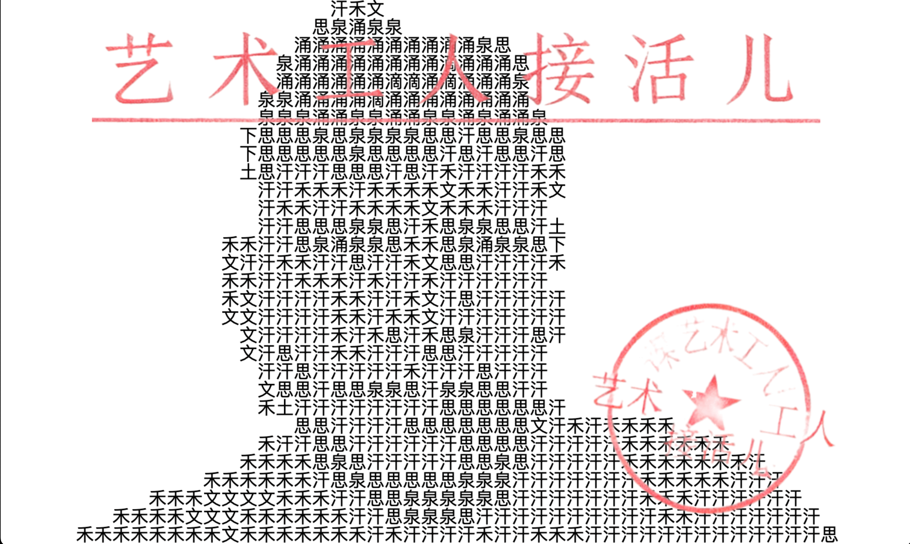

The Birth of the AI Boss
AI老板的诞生
Art · AI · Labor · Open Tools ｜ 艺术 · 人工智能 · 劳动 · 开源工具
本次讲座介绍一个由我们构建的角色——“AI老板”。它诞生于一系列行为、装置与技术实验之中。从一开始，我们就坚持使用可访问、基于浏览器的开源工具，如 p5.js、ml5 和
Pollinations AI。甚至这场演示本身也体现了这种理念——它不是PPT，而是一个静态网页。当权威开始听起来像机器时，意义与自由会发生什么？
Daan Kous (19) & Arjan Kortus (21) — 2013
2013年荷兰风力发电机火灾
Impossible Choice ｜ 不可能的选择
2013年，两名年轻的电气工程师爬上近80米高的风力发电机进行例行维护。一次短路引发机舱起火，唯一的出口被切断。他们当时正在维护我们所谓的“未来”。人们称之为“一个不可能的选择”。
Belief Without an Exit
没有出口的信念
Maintenance · Progress · Risk ｜ 维护 · 进步 · 风险
令我们难以忘怀的不只是火灾，还有其背后的信念结构。绿色能源承载着进步与责任的承诺，但在塔内，它依然是高压、电力、机械与风险构成的重工业。未来往往通过极其具体的劳动被维持。
The Promise Structure
承诺的结构
AI Promise · Infrastructure ｜ AI承诺 · 基础设施
人工智能同样被描述为洁净、智能且不可避免。但在界面之下，是庞大的基础设施：数据中心、能源消耗、人类标注劳动与资本。当机器被隐藏时，系统看起来就最“自然”。
Art Workers on a Burning Megaphone
燃烧的扩音喇叭上的艺术工人
Instruction · Authority ｜ 指令 · 权威
我们用扩音喇叭替代风机，因为当代AI不仅生产知识，也生产“指令”。扩音喇叭放大权威，把建议转化为命令——既荒诞，又令人熟悉。
The AI Boss
AI老板
Open Source · Browser Based ｜ 开源 · 浏览器
“AI老板”贯穿我们的多个项目——它观察、发声、评估并下达命令。更重要的是，它建立在开源生态之上：用 p5.js 实现交互，用 ml5 进行机器学习，并结合 Pollinations
等生成模型。对我们而言，可访问性本身就是一种艺术立场——强大的系统应当保持可见、可理解，并可被他人构建。
Urban Palimpsest — Beijing, 2024
《都市重写》— 北京，2024
200+ Bricks · Algorithms ｜ 200多块砖 · 算法
该装置使用200多块涂绘的砖块，最初被排列成我们熟悉的街道标记——例如“禁止自行车停放”等直接出现在路面的指示。随后，这些有序结构被手动打乱，转化为生成式抽象，仿佛道路施工后这些标记被移动、错位时偶然形成的画面。
然而，此处的随机性是被精心设计的。Python脚本通过 Fisher–Yates
公平洗牌算法生成指令，并由合成语音通过扩音器播报。我们——作为艺术工人与参与者——不加解释地执行这些命令，甚至有时只是把一块空白砖与另一块空白砖交换。逻辑属于算法，而服从是真实的。
From Rules to Perception
从规则到感知
Vision · Language · Bodies ｜ 视觉 · 语言 · 身体
在后续作品中，AI老板获得了“感知”。重新训练的MobileNet通过实时摄像头分类骨头、工具、钢材与工人；大语言模型实时生成指令；姿态追踪将身体转化为坐标系统——可读取、可比较、可优化。而这些能力竟来自轻量、基于浏览器的工具，使这种力量显得触手可及。
The Shock of Language
语言的震撼
Prediction · Meaning ｜ 预测 · 意义
真正令人不安的，也许不是超级智能，而是语言如此迅速地向计算让渡。基于海量数据训练的Transformer模型如今能够生成看似充满意义的文本。如果语言曾是人类独特性的边界，那么这条边界正在变得模糊。
The Alignment Problem
对齐的问题
Values · Control ｜ 价值 · 控制
更深层的担忧或许不在于机器的智能，而在于人的意图。硬件、电网、数据与资本从不真正中性，它们体现着某种优先级。当系统能力不断增强，问题不再是我们能否建造它们，而是——我们是否仍足够清醒，去引导它们的方向。
AI and Labor
人工智能与劳动
Hidden Labor · Vision · Creativity ｜ 隐形劳动 · 视觉 · 创造力

人工智能并非凭空出现，它建立在漫长的人类劳动之上——从 Mechanical Turk，到为机器视觉标注数据的庞大人群。检测、分类、识别、生成式扩散——每一步都源于人类持续投入的注意力。
在我们的创作中，我们使用 MobileNet 等开放工具。同时，我们也看到这种技术正在冲击创意领域：艺术家、程序员、设计师、写作者的角色都在迅速变化，其速度甚至快于文化能够适应。
我们的仪式，以及“AI老板”的形象，某种程度上是一种戏仿。但正如扩音喇叭一样，它让某些东西变得可被听见——关于未来的希望、焦虑，以及结构性的未知。我们已经步入其中，却仍无法完全看清。